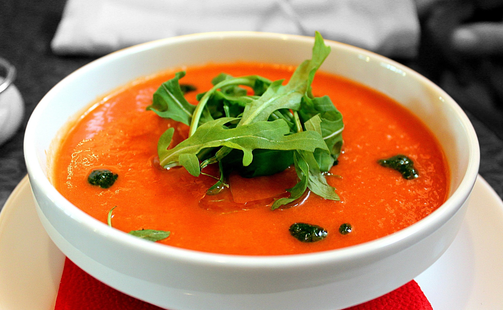
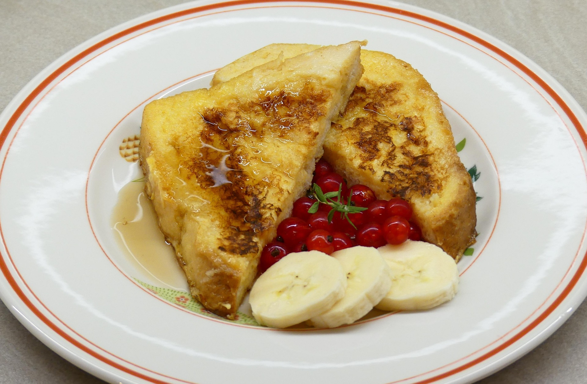

Entrantes frescos
Ideas rapidas para abrir mesa con producto local y contraste de texturas.
Portal Gastronomico
Sabores de Origen
Cocina mediterranea contemporanea
Descubre ingredientes de temporada, tecnicas sencillas y propuestas de menu con identidad local. Este portal combina inspiracion visual, recetas y recursos practicos para cualquier nivel.
Ver recetas destacadas
Ideas rapidas para abrir mesa con producto local y contraste de texturas.
Recetas completas pensadas para cocinar en casa sin complicaciones.

Opciones dulces de temporada con tecnicas simples y resultado elegante.